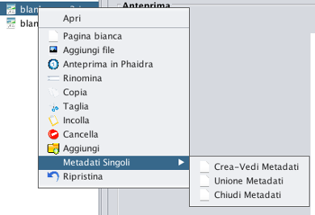

Menü Unterteilung in Kapitel
- Über dieses Menü können Sie die Struktur des Buches oder Sammlung zu erstellen
- Halten Sie sich die Korrespondenz zwischen dem Namen des Abschnitts, den Sie erstellen wollen, und den Dateinamen
(es. coperta / file001, frontespizio / file0 03, capitolo 1 / file005, ecc.)
- Wählen Sie mit der linken Maustaste einen Bereich (. ZB Cover, Kapitel ...) oder Seite, klicken Sie auf die rechte Maustaste und Menü werden unten angezeigt:

- Geöffnet: Erweitern Sie einen Abschnitt Anzeigen der darin enthaltenen Dateien.
- leere Seite: Fügt eine leere Seite unterhalb des ausgewählten.
- Datei hinzufügen: Fügen Sie ein oder mehrere Bilder zu einem Ort Ihrer Wahl.
- Vorschau in Phaidra: Zeigen Vorschaubild der Seite in Phaidra
- umbenennen: Benennen Sie ein Kapitel oder ein Bild von dem Buch oder Sammlung
- Kopieren und Einfügen: Kopieren Sie eine Datei von Kapitel zu Kapitel
- Ausschneiden und Einfügen: Ausschneiden und Einfügen einer Datei von Kapitel zu Kapitel
- löschen: Löschen einer Datei oder ein ganzes Kapitel
- hinzufügen: Fügen Sie ein Kapitel dem Buch oder eine Untersammlung der Sammlung.
- wiederherstellen: Gehen Sie einen Schritt zurück im Falle eines Fehlers durch den Benutzer.
- Metadata einzelnen (Nur für Sammlungen)
- Erstellen Sie Metadaten anzeigen: Erstellen Sie eine neue Registerkarte mit spezifischen Metadaten der ausgewählten Seite.
- Union Metadata: Löschen Sie die Registerkarte jedes Metadaten die Metadaten generisches Objekt in Frage.
- Schließen Metadata: Schließen Sie die Registerkarte Metadaten einzelnen zu bitten, die Daten an das einzelne Objekt exportieren.